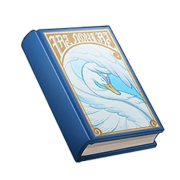

Tales of a Snow-Winged Goose¶

Vol. 1 - Pers the Penguin¶
Note
A short fairy tale that is quite popular in Fontaine. Many children saw the exquisitely drawn cover and thought it was really written by the kind Madam Snow-Winged Goose of legend.
Legend says there is a sea of ice far off in the south. That is where the penguins live.
Penguins are chubby little ladies and gentlemen, with tuxedos of black feathers pulled tight over their cute white bellies. You might think they look awkward on land, waddling about, unable to fly like other birds. But just you wait. You'll see them throw themselves onto those bellies and slide as if snowboarding, right into the water. With a splash, they become elegant and talented swimmers, their thick, flipper-like wings helping to streamline their bodies as they zoom about underwater.
Now, lots of children already know these penguin facts. And children who love penguins will know all this by heart.
But there is one thing that even the penguin-loving children don't know. Every penguin in the world comes from outer space, far beyond the skies. Great flocks of penguins once flew across the universe, their flippers steering them between the stars, their sleek feathers reflecting what little starlight there was out there in the void. From red giants to white dwarfs, from the shoulder of Orion to the glimmering Tannhauser Gate... The penguins explored it all. The penguins remember it all.
But, perhaps because of some interstellar catastrophe or even a simple family argument, several penguin clans split off from that galaxy-roaming flock and landed in the icy waters to the south of Teyvat. They became our first penguins. But those new arrivals found our atmosphere too thick to fly in, and their lack of prior experience with water left them unable to swim as well. Until, that is, the birth of the marvelous Pers the Penguin — the first penguin to learn to swim.
Like many young penguins, Pers would gaze up at the starry night sky, or the blue skies of daytime, and say to himself: "If only I could fly, like my ancestors!"
And so Pers decided to learn from the birds. How did they fly so high?
First, Pers the Penguin asked the biggest bird he could find: a frigatebird. And the frigatebird said: "Haha! Piece of cake! Once you bring me 30 fish, I'll spill the beans!"
And so Pers spent 50 nights on a moonlit beach, collecting 300 shells. Then he found a whale who liked shells and exchanged his 300 shells for 30 fish.
The next day, the frigatebird swallowed those 30 fish in one great big gulp before laughing and flying away. As he flew off, he called down to young Pers: "The secret to flying is to be light! Why not try losing some weight?"
Well, losing weight was easy enough. But if a penguin lost its thick layer of fat, it wouldn't be a penguin anymore. So, Pers shook his head.
And as all children know, the frigatebird got a new nickname after all this for its greed and unreasonable nature: the piratebird.
Next, Pers asked the seagulls for help. But all they did was squawk and croak. Pers was thus none the wiser, and the seagulls wound up having a big argument. In fact, some of them became so angry that they refused to fly ever again, becoming auks... Though that's a different story.
And so Pers asked a petrel for help. But the petrel would only teach him some impractical tricks, and not the basics that he needed most. Because, that noble seabird thought, surely it was better to learn how to soar through a stormy sky than to worry about trivial matters like taking off and landing.
Pers was now a very disappointed penguin. He waddled back to the beach and gazed out across the peaceful nighttime ocean. And as he did so, he noticed for the first time ever that the stars of his celestial homeland were reflected in the ocean. And he found them so beautiful that he simply... jumped in.
And, after a brief moment of panicked sinking, Pers the Penguin realized that he could fly — underwater, at least. He could whizz speedily along, or twist and turn. It was, after all, what those strong wings and that smooth round body had been made for!
And that is how Pers the Penguin became the first penguin to learn to swim. And after Pers, many other penguins plucked up the courage to take that leap into the waters and, like their ancestors, soar amongst the glimmering stars, exploring, feeding, and playing.
Once Pers had shown them the way, the penguins took to life in the water and forgot their spacefaring past. Not even in their dreams did they remember that limitless void. The penguins live here now, between sea and land.
Vol. 2 - Princess Marcotte¶
Note
A short fairy tale that is quite popular in Fontaine. Many children saw the exquisitely drawn cover and thought it was really written by the kind Madam Snow-Winged Goose of legend.
In the not-too-distant past, every type of plant and every type of beast had its own kingdom.
And in the Marcotte Kingdom, there live a princess with long pink hair. Legend has it that she was born in a crab claw and never put down roots — she always was, and always would be, a tough little seed.
"My darling daughter, my beloved treasure. Why not settle down and enjoy a life of nobility? Why do you wait so long to sprout and grow?" asked her worried and kingly father.
"Father, father, please do not fret or rage. I was born in a crab claw, and that claw will be my ship. Your daughter's fate is not to take root in the mundane earth and grow pretty flowers. It is to conquer the seas and explore a new and wonderful world!"
The king was shocked by his daughter's plans. What was wrong with pretty flowers, he thought? Wasn't he a pretty flower? And what if his daughter one day decided to set down those roots and grow an even prettier garland than his? That would be terrible.
But he only felt this way because he was ashamed of not being as pretty as he wanted to be.
And so, he had the princess and the crab claw locked up in a golden box. Then he hid the golden box in a mirror made of purest water. And then he threw the mirror into the sapphire lake of the Pluie Lotus Kingdom. There was only one way to reverse all those layers of confinement and free the princess (and the crab claw) — to make the Mother Lotus laugh. And as everyone knows, Pluie Lotuses are all too used to weeping.
"All is well again," said the king. "I can rest my regal head in peace. All I need to do is wait and wait, for my beloved daughter's seed to start to crack. She will lose her wanderlust. For what choice will she have, but to grow..."
"And then my daughter will be like me. She will follow her destiny and grow strong and healthy."
But the brave princess was not cowed by her long imprisonment. She wrote joke after joke to try and make the Mother Lotus laugh, and practiced telling those jokes over and over. The crab claw chortled. Even the golden box guffawed. But the Mother Lotus? Nothing.
So she decided to write a comic play. She rehearsed until the crab claw couldn't help but burst into laughter and hop around — despite having no feet! She even converted the interior of the box into a theater. But still, nothing.
Next, the princess tried to find comedy in the circumstances of her imprisonment — situational comedy, she called it. Soon the crab claw was, like the princess, laughing until it cried and then crying until it laughed. And eventually, the Pluie Lotus — keen criers, as we know — found themselves giggling. Finally, the Mother Lotus could contain her curiosity no longer, and the princess was granted an audience.
And, to everyone's surprise, the princess didn't even need to tell a single joke. The Mother Lotus burst out laughing as soon as the princess entered the room. Her laughter grew louder and louder, shaking the palace walls and sending ripples across the sapphire lake.
Princess Marcotte won her freedom. But she won something more valuable as well — the ability to laugh, and to make others laugh, even in the saddest of circumstances.
In her crab claw ship, the princess sailed the ocean waves on her voyage to the new world of her dreams. And ever since, sailors have told tales of a crab claw ship.
Vol. 3 - Mr. Fox and the Clockwork Guardsman¶
Note
A short fairy tale that is quite popular in Fontaine. Many children saw the exquisitely drawn cover and thought it was really written by the kind Madam Snow-Winged Goose of legend.
A long, long time ago, Mr. Fox and the Clockwork Guardsman were good friends.
Mr. Fox was a successful thief. The Clockwork Guardsman was... well, he was a guard. Clue's in the name, isn't it?
But that was a long, long time ago, of course. They're still good friends, though. That will never change, no matter their jobs or social status.
The Clockwork Guardsman had always had a worry curled up inside him, and as the years passed and his mechanisms aged, that worry got bigger and bigger, like a balloon, and heavier and heavier, like a piglet, and it was always there no matter how much he tried to shake it off, like Mr. Fox's lovely tail. It was a very worrying worry.
So the Clockwork Guardsman told his good friend, Mr. Fox, of this concerning concern: "I've already lived a very long time. I've met so many people and said goodbye to so many. I've heard the funniest jokes and lived through the saddest times, and then I've forgotten it all and lived through it again. Even though forgetting isn't easy for a machine such as myself, it all fades."
Mr. Fox understood his friend's concerns and knew just what to suggest: "If living such a long life makes you forgetful and jaded, perhaps it is time to die, and in doing so, to make your life real."
"But, my fluffiest of friends," the Clockwork Guard said, removing his alloy guard's cap and sighing, "didn't you steal Death from Ms. Toad's dressing table in that heist many years ago? It caused quite the commotion, as I recall. The living things of the world all forgot how to die."
As, we all know, Ms. Toad is Death's envoy, the queen of all that is ugly, cold, and annoying. She guards that coldest jewel, Death itself.
"Ah, I was so young then. I remember I was madly in love with Ms. Jackal, and I wanted to bring her the most expensive treasure I could find."
"And?"
"I succeeded. But she died."
Death slipped from Ms. Jackal's hand and shattered on the ground. The fragments melted into the earth, never to be seen again. And as that happened, the creatures of the world started to die as normal once more, with all that should have been dead now being so. Except, that is, for Mr. Fox, who should have died, but didn't. His life dragged on.
"Death still exists in this world! All we need do is search for it!" And so Mr. Fox and the Clockwork Guardsman, furry paw in cold metal hand, left the city they called home to search for Death in all the corners of the world.
And they searched and they searched and then they searched some more. They searched until Mr. Fox's beautiful red coat had turned white. They searched until the Clockwork Guardsman's pride and joy, his official guard badge, had rusted. Finally, they reached the place where Ms. Toad lived.
"Ms. Toad? Ms. Toad?" called the Guardsman, as he knocked on the door.
Ms. Toad opened the door slowly and stretched out her warty, scabby hand.
"Lovely Ms. Toad, I am so sorry to bother you again," said Mr. Fox as he took off his hat. "But my good friend is in great pain, and you are the keeper of the only cure."
"Ms. Toad is of course aware of how lovely she is," came a rasping voice from within the ramshackle hut. "And if your friend seeks Death, he will not find it here."
"Life is not tea and Death is not sugar. Their tastes cannot be distinguished if you live forever. But you have a mechanical heart and a mechanical tongue, and have tasted their flavor over and over, during each cycle of activation and deactivation..." Ms. Toad removed an embroidered shroud to reveal the cold jewel called Death, then extended a hand, beckoning to the Clockwork Guardsman. "Come, young guard, come, child. All must be tested, but do not admit defeat easily, my strong child..."
"My maggots will not eat you, my moss will not grow on you. Whether your enemy is time or guilt, sadness or ennui... Do not admit defeat easily, my child."
And with that, Ms. Toad took the guard's metal hand and placed it lightly on the jewel called Death, and he saw how long, long in the future, he would end—
After countless years of hardships, a battered and beaten Clockwork Guardsman was thrown into the fires of the scrapping plant, to melt into a metallic ocean of millennia of waste. All those slow metal thoughts and hard metal ideas became swift and liquid. They evolved and combined and formed a new life. It was a glorious return for all metal lifeforms, making even the release of death fade in comparison.
And so the Clockwork Guardsman saw the future and gave up his dreams of dying. His good friend Mr. Fox, meanwhile, withdrew his thieving hand and left the jewel where it was. Indeed, life encompasses more than just bitterness akin to tea. If he had a friend to accompany him through the hard times, what rush was there? He could steal this extraordinary jewel later.
Later, as all children know, Mr. Fox and the Clockwork Guardsman lived long, long lives, until the little world they lived in was but a desert, until the sun went out, until the moon fell... And even then, their story didn't end. It lived on, passed from world to world.